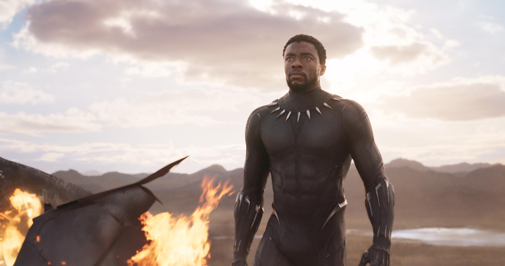

Chadwick Boseman
A bright star forever shining in the sky
Wakanda Forever!
Chadwick Aaron Boseman was born on 29th November 1976 in South Carolina.
Boseman achieved international fame for playing superhero Black Panther in the Marvel Cinematic Universe (MCU) from 2016 to 2019. His first MCU film was Captain America: Civil War (2016) which led to his protayal of the title character in Black Panther.
He receieved critical acclaim for his role as Black Panther and he was the first black actor to headline an MCU film.
He passed away 28th August 2020 from colon cancer. He was diagnosed with stage III colon cancer in 2016, which eventually progressed to stage IV before 2020. Despite this, this was not declared publicily until after his death. A tweet from his family became the most-liked tweet in history.
To find out more, here is his Wikipedia page